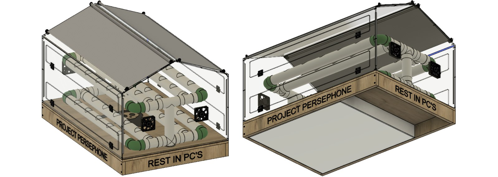
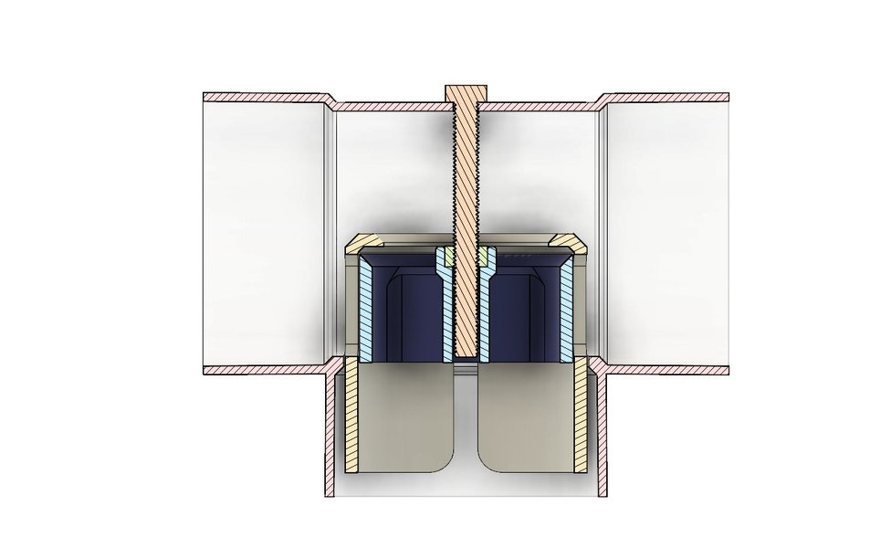

Individual / Robotics
Hydroponic Farm Robot.
“Project Persephone” — an automated, two-level hydroponic cultivation system with sensor-controlled pH, electrical conductivity, temperature, air quality, and light, built with the three-person student team “Rest In PCs” for the World Robot Olympiad.

FIG. 01 — Project Persephone assembly, bird's-eye and worm's-eye views
Design & results
Persephone paired a LEGO Mindstorms EV3 brick with an Arduino Uno/Mega for the sensors EV3 doesn't natively support, continuously monitoring and controlling pH, electrical conductivity, water/air temperature, air quality, humidity, and light.
I was responsible for the mechanical design — the pipe/plumbing system, water tank, greenhouse enclosure, and an original 3D-printed valve mechanism that mechanically adjusts water level to track root growth. Fusion 360 structural analysis predicted a safety factor above 15 for the modelled pipe assembly and greenhouse enclosure before manufacture.
Persephone won its WRO Hellas Open Category qualifier (“Food Matters”) and placed 4th representing Greece at the World Robot Olympiad 2018 World Finals in Thailand, in the same Open Category.
